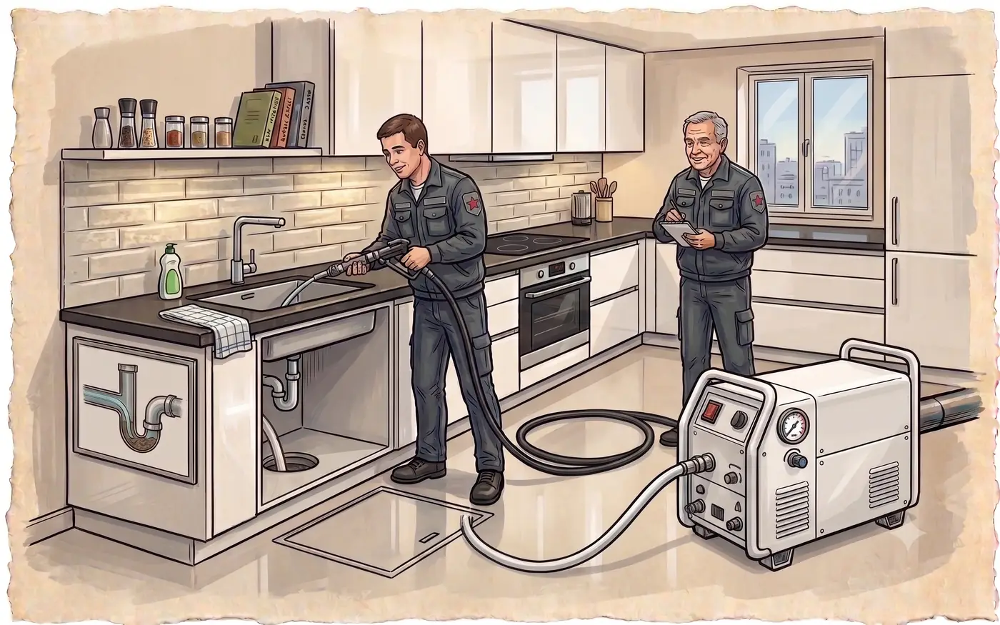
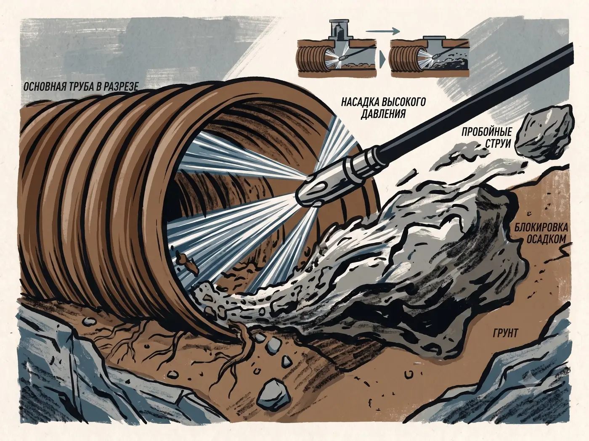
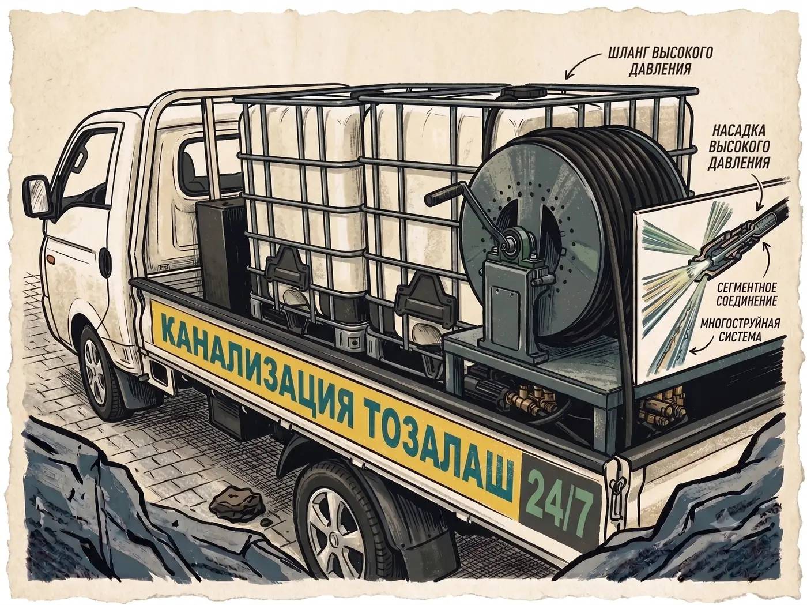

Аварийная служба Ташкента · с 2014 года
Засор в канализации? Приедем и прочистим за один выезд.
Кухонная раковина и стояк в квартире, жироуловитель в кафе, наружная линия на производстве — бытовые и промышленные засоры берём одной бригадой. Круглосуточно по Ташкенту и области.
Диспетчер на линии круглосуточно. Цену назовём в первую минуту разговора.

01Главное отличие
Пробить и прочистить — это разные работы
Вода ушла — это ещё не значит, что труба чистая. Если в пробке просто продавили отверстие, а жир и ил остались на стенках, засор соберётся заново за две-три недели. Мы снимаем отложения по всей длине участка — поэтому не возвращаемся к вам по второму разу.

Дырка в пробке
Тросом продавили узкий канал, вода побежала — мастер уехал. Стенки по-прежнему заросшие, рабочий диаметр трубы почти не восстановлен.
Что дальше: засор возвращается за 2–3 недели
Труба в рабочем диаметре
Снимаем отложения по всей длине участка и вымываем их в колодец. Если есть сомнения — показываем трубу изнутри камерой, чтобы вы увидели результат сами.
Что дальше: гарантия и никаких повторных вызовов
02Оборудование
Под любой вид засора
Тряпка в стояке, жир в кафе, песок в наружной линии и корни в трубе частного дома — это четыре разные задачи, и одним тросом они не решаются. Весь набор едет одной машиной.

Гидродинамическая установка
Насос подаёт воду под давлением до 200 бар. Именно она снимает со стенок жир и ил — то, что трос просто проткнёт насквозь, оставив трубу заросшей.
Против: жир, ил, наростЧто ещё приезжает той же машиной
03Кто приедет
Технику выбирает человек, а не прайс-лист
Оборудование можно купить. Понимать, что происходит внутри чужой трубы, и не сделать хуже — нет. У наших мастеров это основная профессия, а не подработка по объявлению.
Сначала диагноз, потом инструмент
Мастер выясняет, где именно стоит вода, как быстро уходит и что было до вызова. По этим признакам уже понятно, тряпка это в отводе или заросшая наружная линия — и какой машиной её брать.
Знают городские сети
Старый чугун в центре, пластик в новостройках Сергели, наружные линии частного сектора и общие колодцы — везде свои типовые места засоров. Опыт по Ташкенту здесь важнее мощности насоса.
Работают до результата
Не «вода пошла — до свидания». Мастер проверяет, что участок принимает полный поток, и промывает трубу по всей длине. Если нужно — показывает камерой, что внутри чисто.
Аккуратно и без разрушений
Плёнка на пол, работа через существующие ревизии, без вскрытия стен и плитки. Уборка за собой — часть работы, а не одолжение.
«Открыть канализацию может почти кто угодно. Вопрос в том, вернётесь ли вы к этому засору через месяц. Мы работаем так, чтобы не возвращаться.»
04Как проходит вызов
От звонка до чистой трубы
Без «мастер приедет и сориентирует по цене на месте».
Звонок
Спросим район и что именно происходит: где стоит вода, как давно, квартира или частный дом. Занимает минуту.
Цена и время
Называем сумму и время подачи ближайшей бригады. Если по описанию непонятно — выезд и осмотр бесплатны.
Работа
Мастер определяет характер засора, подбирает оборудование и прочищает участок целиком, а не до первого протока.
Оплата
Платите, когда вода ушла: наличные, Click, Payme, перечисление для юрлиц. С гарантией на выполненные работы.
05О стоимости
Почему на сайте нет прайса
Один и тот же засор в двух квартирах стоит по-разному: где-то хватит троса на полчаса, где-то нужна промывка наружной линии на сорок метров. Прайс на такое пишут только затем, чтобы заманить дешёвой строчкой и переписать сумму на месте. Мы так не делаем.
Цену называем по телефону
Диспетчер спрашивает, что именно происходит и где, — и называет сумму до выезда. Не «от», не «примерно», а цену вашей работы.
Названная цена не меняется
Если на месте окажется сложнее, чем звучало по телефону, мы либо делаем за озвученную сумму, либо уезжаем — и вы ничего не платите.
Платите после работы
Когда вода ушла и вы всё проверили. Наличные, Click, Payme, юрлицам — перечисление с закрывающими документами.
Выезд и осмотр по Ташкенту — бесплатно. Узнать стоимость вашего случая — одна минута разговора.
Узнать цену · +998 33 794-70-3006Где дежурим
Бригады во всех районах города
Мы не гоняем одну машину через весь Ташкент. Выберите свой район — увидите, за сколько к вам доедут и с какой техникой.
Наряд на выезд
07С чем работаем
Квартира, дом, кафе, объект
От кухонного слива в квартире до наружной линии на производстве. У каждого объекта свои типовые засоры — и своя техника под них.
Квартиры
Раковина, ванна, унитаз, общий стояк. Работаем и с соседями, если пробка общая.
Частный сектор
Септики, выгребные ямы, наружные линии от дома до колодца. Илосос и промывка.
Кафе и рестораны
Жироуловители и жир в трубах — самая частая причина. Промывка под давлением, обслуживание по графику.
Объекты и производство
Склады, цеха, офисы, ТСЖ. Договор, регламентное обслуживание, закрывающие документы.
08Отзывы
Что говорят клиенты
«Позвонила ночью, мастер был через полчаса. Прочистил стояк и показал камерой, что причина у соседей сверху. Ничего не ломали, убрали за собой.»
«У нас кафе, каждый месяц вставал жироуловитель. Промыли под давлением, взяли на обслуживание — с тех пор ни одной остановки в зале.»
«Частный дом в Сергели, яма переполнилась в воскресенье. Приехали в тот же день, откачали, заодно промыли трубу до колодца. Цена совпала с той, что назвали по телефону.»
09Вопросы
Коротко о главном
Чем ваша работа отличается от дешёвого вызова по объявлению?
Тем, что мы восстанавливаем рабочий диаметр трубы, а не пробиваем в пробке отверстие. После «пробили и уехали» засор обычно возвращается за две-три недели, и вы платите второй раз. Мы снимаем отложения со стенок по всей длине участка, а при необходимости показываем результат камерой.
Как быстро приедет бригада?
Работаем круглосуточно, включая ночь, выходные и праздники. В центральных районах бригада обычно доезжает за 15–25 минут, на окраинах и в области — дольше. Точное время диспетчер называет сразу, исходя из того, где сейчас ближайшая свободная машина.
Сколько будет стоить и когда платить?
Ориентир по цене вы получаете по телефону, до выезда. Платите после того, как работа сделана: наличными, через Click или Payme, юрлицам — по перечислению с закрывающими документами.
Придётся ли ломать стены или плитку?
В подавляющем большинстве случаев нет. Трос и гидродинамика работают через существующие ревизии, унитаз или стояк. Если разбор всё-таки необходим, мы предупреждаем заранее и согласовываем с вами.
Что делать, если засор вернётся?
На выполненные работы даётся гарантия. Если засор возвращается регулярно, дело обычно в состоянии самой трубы — просадка, трещина, корни. В этом случае мы предлагаем телеинспекцию, чтобы увидеть причину, а не гонять трос по кругу.
Ўзбек тилида гаплашасизми?
Ҳа, албатта. Диспетчерлар ва усталар ўзбек ва рус тилларида гаплашади — ўзингизга қулай тилда қўнғироқ қилаверинг.
Вода стоит прямо сейчас?
Диспетчер на линии круглосуточно. Скажите район и что случилось — назовём цену и время подачи в первую минуту разговора.